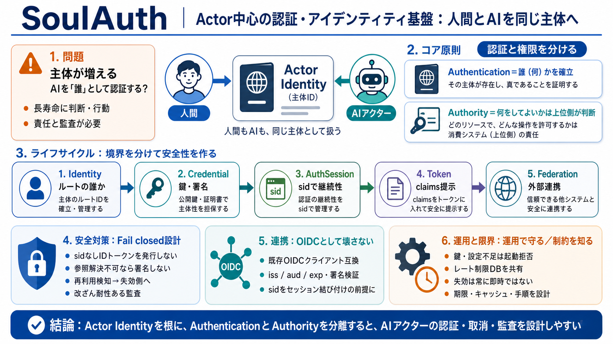

Best Solana Audit Firms 2026: Rust Experts Compared by Data | Procur3
Instead of individually emailing each firm, waiting for a sales call, redoing the scope conversation five times, and com…

Actor-first Identity / 認証観
主体が増える / Who is real?
Passport と Permission / 分ける
Lifecycle分離 / 契約で守る
安全策セット / Fail closed
OIDC準拠 / 統合しやすく
概念の混同を防ぐ
クライアント側の責務 / Verify
sidなしの危険 / Fake valid
運用の現実 / クォータや鍵
既知の制約 / 先に知る
導入レビュー観点 / Checklist
Instead of individually emailing each firm, waiting for a sales call, redoing the scope conversation five times, and com…
Trail of Bits Focus: Top-tier; broad (EVM + Rust + protocol) Recruiting signal: Code4rena placements + public wr…
It tries to be as secure as possible by default while still providing all the options needed to be compatible with older…
Nethermind ResearchNethermind SecurityBlockchain Core EngineeringInfrastructure ManagementdApps & Enterprise Engineering…
| flux | November 2023 | Manual Code Review, Automated Testing | In-Flux-ible on bugs- Flux undergoes Security Audit wit…